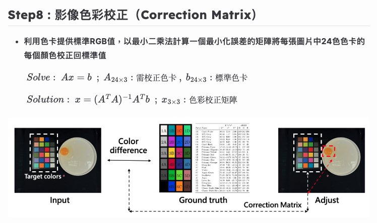

寵物脫毛區域毛量偵測
獸醫師需監測寵物脫毛區域在用藥前後的毛量變化，並評估治療是否有效改善脫毛問題。 訓練YOLOv7模型偵測寵物脫毛區域， 結合OpenCV增強影像與計算區域毛量比例。 最後利用C#串接模型建立桌面應用程式，供獸醫師使用。
YOLOv7模型在測試資料集達到100%的Precision、100%的Recall、99.5%的mAP@.5及92.7%的mAP@.5:.95。
- 程式語言 : Python、C#
- 使用框架 : Pytorch、OpenCV、ONNX
- 開發系統 : Ubuntu、Windows

牧場豬隻數量清點模型
透訓練YOLOv7模型偵測豬隻，並利用演算法追蹤豬隻移動軌跡，達 成豬隻計數。最後將計算數量結果顯示於燈板， 協助現場人員完成豬隻數量清點工作。
YOLOv7模型在測試資料集的綜合平均精確率 (mAP@.5)達 99.6%，模型計算豬隻數量準確率達 100%。
- 程式語言 : Python
- 使用框架 : Pytorch
- 開發系統 : Ubuntu

應用機器視覺於蛋黃顏色評分之研究
為克服人眼在蛋黃顏色評分上容易受主觀與環境因素干擾的問題，本研究採用機器視覺進行自動化判斷， 並透過圖像中的色卡進行色彩校正，以降低不同拍攝時期造成的顏色誤差，提升評分的一致性。
- 程式語言 : Python
- 使用套件 : OpenCV
- 開發系統 : Ubuntu